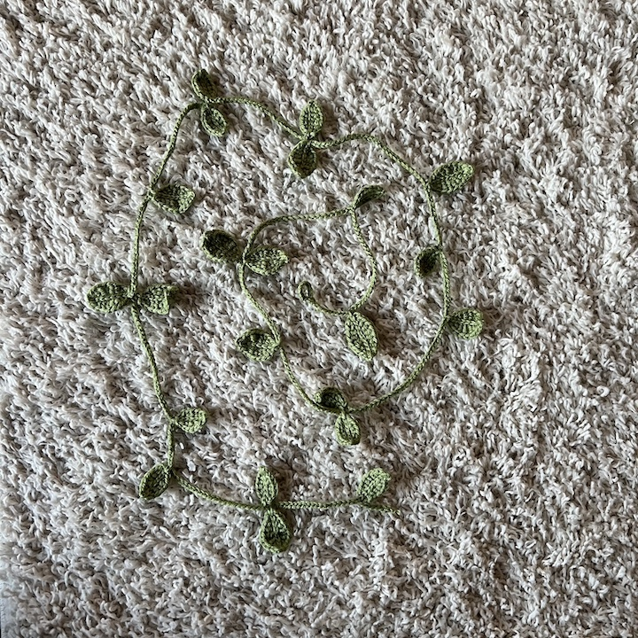

Over the course of quarantine, I learned how to crochet! I found it really fun and it's an activity I continue to do often. I think a lot of my personality shows in the colors I choose to work with; I mainly make bags and little gifts for my friends and family, but it's always been fun for me to experiment and try out different patterns.
